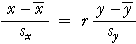

Diversas líneas se utilizan para predecir Y y para predecir X
El coeficiente de correlación es simétrico en las dos variables — el coeficiente de correlación entre X y Y es igual que ése entre Y y el X. Sin embargo la línea de los m3inimos cuadr3aticos que predice Y de X no es igual que ésa usada para predecir X de Y (incluso después el cambio de la ecuación).
Si el scatterplot se dibuja con la Y variable en el eje vertical, los m3inimos cuadr3aticos alinean para predecir Y de X,
y = b0 + b1 x
reduce al mínimo la suma de distancias verticales ajustadas entre los puntos en un scatterplot y la línea. Por una parte, si estamos interesados en predecir X de Y usando una línea,
x = c0 + c1 y
las residuales son las distancias horizontales entre los puntos y la línea en el mismo scatterplot, y los m3inimos cuadr3aticos reducen al mínimo la suma de cuadrados de éstos.
Diversas líneas reducen al mínimo la suma de cuadrados de distancias horizontales y verticales.
Sobre las dos líneas de los m3inimos cuadr3aticos
Las dos líneas de los m3inimos cuadr3aticos se pueden escribir simplemente en términos de variables estandardizadas,
| La ecuación de m3inimos cuadr3aticos alinea para predecir Y de X | |
|---|---|
| La ecuación de m3inimos cuadr3aticos alinea para predecir X de Y |  |
donde está el coeficiente r de correlación entre X y el Y. Puesto que r es siempre menos de 1, los m3inimos cuadr3aticos alinean para predecir Y de X son los más horizontales (más cercano a ser paralelo al x-axis) de las dos líneas.
Pesos de hermanos
El scatterplot abajo demuestra los pesos adultos (en el kilogramo) de 100 pares de hermanos envejecidos entre 20 y 30.
La línea que se dibuja inicialmente en el scatterplot mira un ajuste razonable a los datos — prediría el peso de cada hermano para ser igual a la de su hermano. Sin embargo éste no es los m3inimos cuadr3aticos alinea para predecir el peso del más viejo hermano.
Chasque al más viejo hermano del checkbox bajo scatterplot. Esto extrae las residuales de usar la línea para predecir los pesos de los más viejos hermanos de los de sus hermanos menores. La suma de cuadrados residual también se demuestra bajo scatterplot. Arrastre la flecha roja en el scatterplot para girar la línea y para observar que la suma de cuadrados residual está reducida al mínimo cuando la línea está más cercano a horizontal.
Ahora apague al más viejo hermano del checkbox y chasque al hermano menor del checkbox. Las residuales para predecir los pesos de los hermanos menores de los más viejos hermanos se demuestran mientras que las lineas horizontales y su suma de cuadrados se exhibe. Arrastre la línea y observe que la suma de cuadrados residual está reducida al mínimo cuando la línea es más vertical que antes.